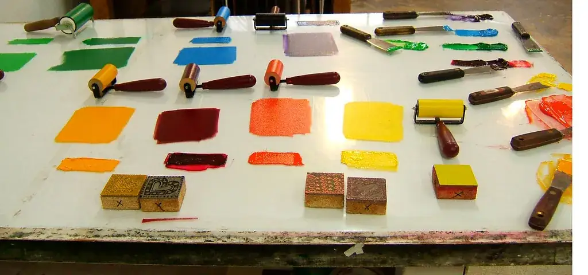
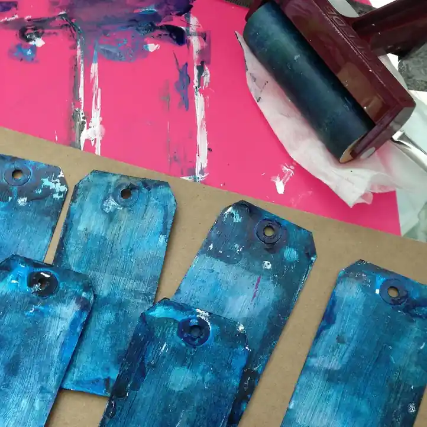
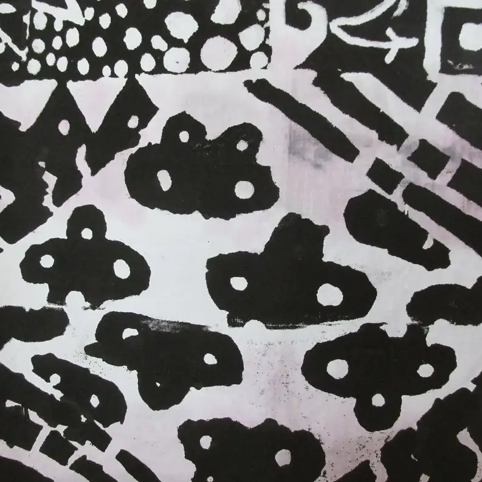

Planche 01 · Papiers et encres

Papiers et encres
Le papier d’abord, l’encre ensuite, le temps enfin
Ce que nous imprimons, sur quoi, et ce que devient une affiche une fois sortie de l’atelier — encadrée au mur ou roulée dans son tube. Les faits tels que nous les connaissons, et les tenues à la lumière telles que les fabricants les publient.
Planche 02 · Les papiers
Les papiers
Les papiers que nous imprimons, et pourquoi
Un papier de sérigraphie doit accepter une encre à l’eau sans gondoler, garder un aplat net sans boire la couleur, et supporter deux, trois ou quatre passages de racle sans pelucher. Un papier de gravure doit au contraire être un peu souple, pour épouser le relief du bloc sous la presse et prendre le foulage. Nous n’utilisons donc pas un seul papier, mais quelques-uns, chacun pour ce qu’il fait bien.
Tableau à quatre colonnes : sur un écran étroit, faites-le glisser vers la droite pour lire les deux dernières.
| Papier | Nature et surface | Ce que nous y tirons | Pourquoi celui-là |
|---|---|---|---|
| Papier de création, grain fin | Cellulose pure, sans acide, grain fin, blanc naturel ou crème, grammage lourd | Affiches sérigraphiées en plusieurs couches | Un aplat s’y pose net, la feuille reste plane après trois couches et se roule sans casser. |
| Papier de création, grain satiné | Cellulose, surface lissée, blanc | Affiches où les traits fins et les trames comptent | Le détail d’une trame passe mieux sur une surface lisse ; la couleur y paraît plus vive. |
| Papier coton | Coton en majorité, grain léger, blanc doux, grammage moyen | Linogravures en noir et en deux tons | Il se laisse presser et garde le foulage ; le noir y devient profond sans briller. |
| Papier vergé | Cellulose, surface striée par les vergeures, teinte crème | Petites estampes, épreuves d’atelier | Le relief des vergeures dialogue avec la gravure ; nous le gardons pour les petits formats. |
| Papier de mise en train | Papier courant, non conservé | Essais, calage, réglage de pression | Il sert à régler, pas à durer ; une épreuve tirée dessus est vendue comme telle et dite comme telle. |
Dans tous les cas, la fiche du tirage nomme le papier, son grain et son grammage. Nous ne changeons pas de papier au milieu d’une édition : si une rame s’épuise, l’édition est fermée là où elle en est.
Planche 03 · Les encres

Les encres
Encres à l’eau, base acrylique
L’atelier imprime avec des encres à l’eau en base acrylique, pour la sérigraphie comme pour la gravure. Elles sèchent à l’air, sans solvant, et donnent un aplat mat, légèrement velouté. Elles se mélangent entre elles à la plaque, au couteau, ce qui nous permet de composer une couleur pour une édition — et de la noter, pour la tenir d’une feuille à l’autre.
Tenue à la lumière. Les fabricants d’encres publient pour chaque pigment une indication de tenue à la lumière, le plus souvent sur l’échelle dite de la laine bleue ou selon une classification par degrés. Nous reprenons ces indications telles quelles sur la fiche du tirage lorsque l’encre sort du pot sans mélange ; pour une couleur composée à l’atelier, nous indiquons la tenue du pigment le plus fragile du mélange, parce que c’est lui qui donnera le ton en vieillissant. Nous ne faisons pas nos propres tests de vieillissement et ne promettons rien au-delà de ce que le fabricant écrit.
Ce qu’une encre à l’eau n’est pas. Elle n’est pas une encre à solvant : elle ne brille pas, ne sent pas, et ne durcit pas en film épais. Elle n’est pas non plus une encre d’imprimerie numérique : la couleur est posée en une couche pleine, à travers un écran, et non en points. Une sérigraphie regardée de près montre un aplat uniforme et, aux bords, la trace de la maille ; c’est à cela qu’on la reconnaît.
Pourquoi une couleur bouge. Un mélange fait à la main varie d’un pot à l’autre ; une encre s’épaissit un peu au fil de la journée ; l’humidité de l’atelier change la vitesse de séchage. Nous notons les proportions et remélangeons si besoin, mais deux éditions tirées à des mois d’écart, dans la même couleur nominale, ne sont jamais tout à fait jumelles.
Planche 04 · Le temps

Le temps
Ce que fait le temps sur une affiche
Encadrée au mur. Ce qui fait pâlir une encre, c’est la lumière, et surtout la part ultraviolette du jour. Une affiche accrochée face à une fenêtre exposée au sud vieillit plus vite que la même affiche dans un couloir. Un verre ou un plexiglas filtrant les ultraviolets ralentit nettement le phénomène ; un passe-partout épais tient la feuille à distance du verre et lui laisse respirer. Nous n’encadrons pas, mais nous décrivons volontiers ce qu’un encadreur fera de votre tirage si vous le lui demandez.
Roulée dans son tube. Une feuille roulée garde sa couleur, à l’abri de la lumière, mais prend la forme du rouleau : plus le tube est étroit et plus le séjour est long, plus la feuille garde une courbure. Un papier lourd la perd en quelques jours à plat sous un poids réparti ; un papier léger met plus de temps. Nous expédions dans des tubes larges, l’image tournée vers l’intérieur, pour que la face imprimée ne frotte pas contre la paroi.
À plat, dans un carton. C’est la meilleure façon de garder une estampe qu’on n’accroche pas tout de suite : à plat, entre deux feuilles de papier de soie, dans un carton sans acide, loin d’un radiateur et d’un mur humide. Le papier reprend et rend l’humidité de l’air ; il ondule quand cette humidité change vite, et se recalme quand elle se stabilise.
Ce qui ne bouge pas. Le foulage d’une gravure, la trace de la maille aux bords d’un aplat, la mention au crayon sous l’image : ces marques restent. Ce sont elles qui, dans dix ans comme aujourd’hui, disent qu’une feuille a été tirée à la main.